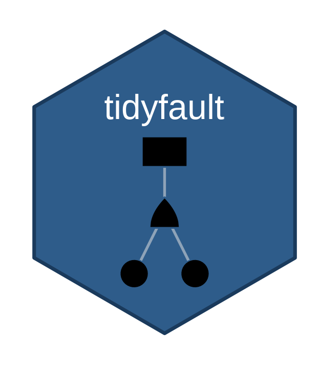
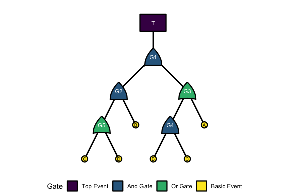

Uses tidyverse, tidygraph, and related tools to visualize fault trees, identify minimal cutsets, and evaluate failure outcomes.
How do we use tidyfault to analyze fault trees?
Let’s start by loading our dependencies!
Next, let’s get some fake data to work with, including nodes and edges in our fault tree.
Finally, let’s demonstrate the basic workflow for tidyfault!
First, we…
curate() a list of gates in the fault tree;
mygates = curate(nodes = fakenodes, edges = fakeedges)
mygates
#> # A tibble: 6 × 6
#> gate type class n set items
#> <chr> <fct> <fct> <int> <chr> <list>
#> 1 T top top 1 " (G1) " <chr [1]>
#> 2 G1 and gate 2 " (G2 * G3) " <chr [2]>
#> 3 G2 and gate 2 " (B * G5) " <chr [2]>
#> 4 G3 or gate 2 " (A + G4) " <chr [2]>
#> 5 G4 and gate 2 " (B * C) " <chr [2]>
#> 6 G5 or gate 2 " (C + D) " <chr [2]>equate() to find the boolean equation for the fault tree;formulate() that equation into an R function we can use;
myfunction = myequation %>% formulate()
myfunction
#> function (A, B, C, D)
#> (((B * (C + D)) * (A + (B * C))))
#> <environment: 0x10e4e6240>calculate() the full truth table of all possible combinations of events and the outcome each leads to.
mycombos = myfunction %>% calculate()
head(mycombos)
#> # A tibble: 6 × 5
#> A B C D outcome
#> <dbl> <dbl> <dbl> <dbl> <dbl>
#> 1 0 1 1 0 1
#> 2 0 1 1 1 1
#> 3 1 1 0 1 1
#> 4 1 1 1 0 1
#> 5 1 1 1 1 1
#> 6 0 0 0 0 0concentrate() our gate structure into the minimum cutsets, the smallest sets of events necessary to cause system failure. This function uses boolean minimalization to find the minimum cutsets.
mymin = mygates %>% concentrate()
mymin
#> [1] "B*C" "A*B*D"tabulate() the minimum cutsets and how much coverage they have over the total paths to failure found with calculate(). tabulate() needs both the minimum cutsets and the formula (function from step 3).
mytable = tabulate(mymin, formula = myfunction)
mytable
#> # A tibble: 2 × 4
#> mincut cutsets failures coverage
#> <chr> <int> <int> <dbl>
#> 1 A*B*D 2 5 0.4
#> 2 B*C 4 5 0.8illustrate() + plot() to visualize the fault tree structure.
myviz = illustrate(nodes = fakenodes, edges = fakeedges, type = "both")
myplot = plot(myviz)
myplot
quantify() to evaluate specific scenarios (binary) or top-event probabilities.Or, we can do this all in one fell swoop!
Let’s extract the minimum cutsets from our fault tree data!
# Build gates and formula once (needed for tabulate)
mygates = curate(nodes = fakenodes, edges = fakeedges)
myfunction = mygates %>%
equate() %>%
formulate()
# Run the full pipeline; tabulate() needs the formula for coverage stats
mytable = mygates %>%
concentrate() %>%
tabulate(formula = myfunction)Contact: Timothy Fraser, PhD (timothy.fraser.1@gmail.com)